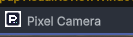

Tracefolio REPORTS & ISSUES
Tracefolio REPORTS & ISSUESPixel Camera 전용 로고 연결 복원
검증 대기Studio 심볼로 잘못 연결된 카메라 창·창 목록·Inspector를 기존 카메라 전용 로고로 복원했습니다.
작업 결과
카메라 전용 컬러·흰색 로고 연결을 복원했습니다. 화면 조작은 재개하지 않았으며 현재 Unity 화면 반영은 미확인입니다.

변경 내용
적용 내용
창 제목과 사용자 정의 헤더가 Studio 심볼 경로를 직접 참조했습니다. GetToolIcon은 해당 titleContent를 그대로 반환했습니다. 기존 PixelCameraLogo.png/White.png 로더를 공통화하고 창 목록의 배경 명도에 맞게 전용 아이콘을 반환하도록 했습니다. 테마·효과·프리셋·팔레트·오브젝트 Inspector는 공통 베이스에서 카메라 로고를 상속합니다. 기존 로고 이미지와 GUID는 변경하지 않았습니다.
검증
Runtime·Samples·Editor·Development·URP·URP.Editor 6개 어셈블리 Roslyn 컴파일 통과. 기존 Affinity 출력 로고 2개 SHA256 일치. 수정 대상 소스의 Studio 심볼 참조 0건.
남은 사항
실제 Unity 전후 화면 대조는 미실행입니다. 이전 Esc 중단 이후 화면 조작을 재개하지 않았으므로 수정 후 캡처는 없으며 화면 검증 완료로 표시하지 않습니다. 검토 패키지 재출력은 이번 수정 범위에 포함하지 않았습니다.
교훈 검토: 모듈 고유 브랜드를 유지한다는 사용자 정정을 적용했습니다. 프로젝트의 로고 연결 문제로 기록하며 전역 지침은 변경하지 않았습니다.
작업 시간
- 제안 시간: 3~5분
- 실제로 완료된 시간: 2026-11-04 15:28:12 KST 시작. 로고 연결 수정 및 6개 어셈블리 컴파일 완료. 공개 배포 확인 시각은 최종 채팅에 기록.
- XERJ: 실패 — Search와 Status 실행 실패. 데이터 디렉터리 node.lock 점유 로그 확인. 잠금 삭제·기존 프로세스 종료 없이 rg와 현재 소스로 대조.